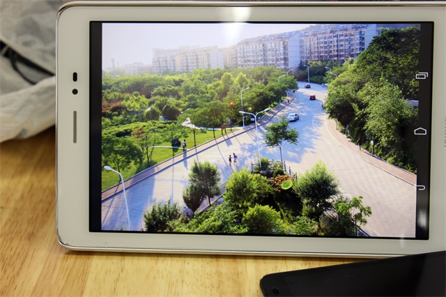
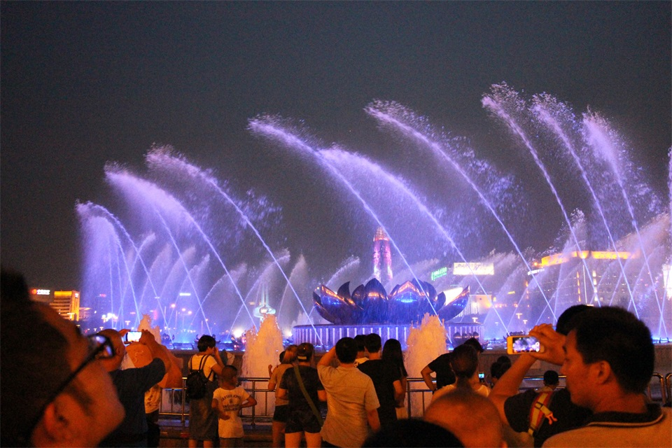

-
我必须不停的奔跑，产生热量，要不然我会很快死去!
晚上入伏的天气实在睡不着起来写日记吧，于是故事和对白就这样开始了！《中国合伙人》我又看了一遍，不知是多少次我看眼湿的时候，可能是第50次，52次...生命中最重要的不是见证成功的时刻，也不是非要一定扬名立万才能活得更好，而是我们不能丧失做人的尊严；为什么地球是圆的，我想那是为了有缘的人能够再相见吧！
有时候在想，我做东西写小书到底是为了什么？还不如把这些时间用来写点程序或搞设计赚点钱更甚之投入到创业计划里实现更高的梦想，这的确是一个现实而又上进的想法，对于很多时候不理智的堕落我深感痛心疾首，终归是邪念当道一次次侵蚀我的生命；这个世界有太多的道理可言，也有无数的故事上演着，我们都是时间匆匆的过客，被她们嘲笑，赞扬 and so on ;时间是我们最小且最珍贵的成本，我们的坚守和信仰 到底为了什么？时常我得不到一个确切的答案，也为了那些毫无意义的自尊，名与利，暂时的贪图享受等等一次次让我在深夜难眠，暂且说好自为之；不管你在世界的哪个角落，我都会下想念并在心里对你说，早安，午安，晚安 . . . 蓝天，白云，海水，你我，湮没在时间的隧道里；我们总是在快结束的时候才想起来刚刚开始，穿过拥挤的人群，在人生某一个阶段周期拥有与众不同的经历就是此生最大的幸福，每天看见日升日落就是最好的告慰，只不过我们时常对她不太在意！这个世界每天都有太多励志的人与故事上演着，很多富二代更是拼尽全力，有思想有远见摆脱父母的光环去干一番事业，你说许多屌丝还在不思进取正正经经又拿什么跟人家去拼呢？人家确实很努力，也当然值得获得更高的名与利！你不要眼红，也不要心太急，你不经历时间的磨砺，深夜孤独与痛苦的"折磨"，也只配拥有平庸的成功！
黑夜，我想生存，也必须生存；孤独不分行业，但绝对是赐给青年最好的礼物，若干年以后你会非常感激她。我必须不停的奔跑，产生热量，要不然我会很快死去!
-
不炫耀努力，不表露悲伤，外向最爱孤独！
不要怀疑，很多人都是这样！以前很喜欢说，现在却不想多开口；不炫耀努力，不表露悲伤；正如长痛不如短痛，永远值得发人深省！外向多才的人反而更喜欢孤独，因为他们知道跟谁合群啥时候合群才会养精蓄锐并见贤思齐，独处是因为他们交流思考之后需要恢复体力；但凡这个世界上有些成就的人一般私下来都喜欢写点东西，只是低调程度不一样罢了，他们有很多身份，切换的毫不费力，因为他们足够努力；我问过导师，校园里面什么时候可以遇到像这样的人？计算机技术特别棒，涉猎文学，艺术，设计，创作，视频传媒，情感，实践等多个领域，而且教科书成绩也比较棒，摘获多个比赛大奖等综合性的人才；老师说，当然有了，只是你现在还没有到能见到他/她的高度！我想：如果是女神，那倒贴也是一种幸福啊！学生时代因为选择个人所经历的痛与烦恼现在看来的确极其重要，暂不说得到什么，熬这个过程就是一种折磨的成长，可能以后想问题做事会相似一些；比起你吃的苦，出差的磨砺，尴尬生活的艰难等等，我不过刚刚开始。 
因为他是一个内外向的人。内向的人，通过独处来恢复精力。所以他们不是喜欢孤独，而是，孤独才是他们的常态。他们跟别人交流、相处，其实都是在消耗精力。外向的人会从外部世界获得精力，不过也有他她虚的时候；我们多数喜欢探讨和解决问题，创作独特价值的与众不同；内外向不同的是经验的广度和深度，对刺激的反应，精力的来源；不要轻易判定一个人的性格水平，只是他/她可能没在你面前表现出来，换一个场景或者另一个陌生人，一切则截然不同；我们痴迷于互联网、社交资源人脉、思维、等热门标签、却忽视了精力的水平，以及恢复精力的方式 。 -
乐观，坚持，极性思维，执行，你习惯了“习惯” ？
今天有幸又和龙哥见面了，我们之间不知聊了多少次，每次他都会给我很深的感触，从营销到做人方面都对我个人价值观有全新思考角度的塑造;有时我承认自己在互联网朋友圈里面是“虚伪”的，因为身不由己，所以限制了一些身份的转变，但还好快要扬帆起飞，去经历另一个城市，真正的社会“大学”; 
在校园里即使自己再与众不同，有自己的想法终归是一方面因素，要想获得更高层次的发展空间以及自身、团队整体价值的提升需要很长时间里好习惯的严格执行坚持和多方面知识的实践结合，即使偏向技术也要懂人性，懂营销，懂心理，懂得打通自己的筋脉爆发自己的价值点；也许曾经走马观花看了一些这方面书，跟别人卖了一点关子也都是小打小闹，自己真正运作项目的能力，设计和分析某一个产品的能力又如何呢？我不禁汗颜，我着实没有做的像样，很是惭愧，以后我会尽量学习这些达人的生活做事方式，更加系统数据化的了解自己，规律化自己的习惯，严格要求自己且坚持到底，这些道理说写起来都很容易，具体执行起来到底有多难，很多人可能也包括我都死在了去坚持追寻梦想的道路上；意识到自己的许多不足，这条路有你们指点我相信没有到不了的明天！说话和做事都要有递进关系，一步一步设计好直击重点，啰嗦是有时一大忌；看待问题以后要更加抽象立体化，当然要有足够的经历和吃过一定的苦头才能总结和给别人呈现独特奇妙的思维方式；因为优秀所以与众不同，因为坚持所以特立独行，因为相频所以有缘再聚，因为思念所以永恒不朽；感恩，此生不忘初衷，想到说到做到，且行且珍惜！因为你我从不同的环境经历下相遇，然后相互鼓舞成长，然后再分别去不同的城市或国度经历尘世喧嚣，爱恨情仇，生离死别; 纵使无奈也终将无法无法逃脱命运，幸福在自己眼中和脚下只要你努力擦亮双眼去看，去感受喜与悲，所不同的是，人变了，眼光不同了，这个世界也就不同了；不以物喜，不以己悲；你若安好，我自安之 。
-
在你没成熟之前想要的无非是别人眼中的自己！
眼前的这些真的是你想要的？
如果你得到某些长久渴望的事物之后除了满足短暂的欲感再也没有其他的感觉，很多时候我们在别人眼中的角色往往和自己认知的方向相反，因为我们不愿被别人猜的表里如一，偶尔我们聊起来会互相羡慕着推崇着；也许笔者更像一个深夜电台的主持人，只不过对话的环境确实如此熟悉和“痛苦”，所有的对话都源于我和另一个我，过往的所有错误和年华，都由我来继续答卷，"颓废"的我从未想过满分的概念，即便在你心中算是特立独行，厌烦而又无奈这种教育体制也确实是自然选择的有力因素，物竞天择适用于任何种族当之无愧；有时想我的冷漠绝非无价，只不过还没有遇到太合适的开锁人；有时已无心等待和寻找，缘分已让我疲惫；有限的一些真哥们真姐弟，但愿我们彼此珍惜这段缘分；爱情这个话题别人跟我提一聊就是一个深深的文青告白，多数想起也是因为朋友父母提起，她的形容暂时无法用文字来传达；写爱情故事我自是兴致勃勃，喜出望外；自是岁月安好，我却不敢再爱，不敢再经历和拥有。
我真的没有喜欢的人? 偶尔这样问自己 :
答案，我也不知道；似乎正是到了找女朋友的年纪，我却不敢再主动去爱，也不敢接受爱，因为有过简单的伤害，让我在你看似很坚强的外表下偶尔显得如此脆弱；我会这样找借口，完全是自己的原因，现在的我还不够好，还不配拥有，还不能给你一个稳定幸福，丰衣足食的家！
这个答案被问了好多遍终于在几天前又被提示了，我相信缘分，即使朋友的闲来扯笑，对爱情的主动与控制让己萌生遐想，我是否已经清空上一次的情感垃圾，重新考虑一段新的旅程，这个疑问与徘徊，就像学业中做事业一样，矛盾与无奈，是执行力和思维方式太low而一次次错过，接下来听天由命时稍微留意一下生活的美，用相机扑捉感动，我想完善我的生命，用知识和技能武装大脑心灵的同时，情感也能随我掌握，随遇而安，不再轻易说再见！因为那些爱恨情仇，无非可能是过客匆匆。
其实我是想说，大学生活是没有完美的，而这是允许我们任性犯错误的最后时光。梦想让我们每个人与众不同，脚踏实地我们才能仰望星空。
那些爱和眷恋不必多言，祝福母校未来更加美好！以后，我们养成了一个对母校思念的习惯，对"挚友"怀念祝福的冲动；需时，高铁飞机相见；别时，把爱藏在心中角落，不会轻易让你看见，这就是你认识的我，愿意为你"浪费"时间！
-
备注声明
工作原因，文章板块均移步到微信公众平台的原创媒体，感兴趣者可以添加微信号：PhotoArtLife(或识别右侧二维码添加编辑WeChat)
二维码
微博私信
回到顶部